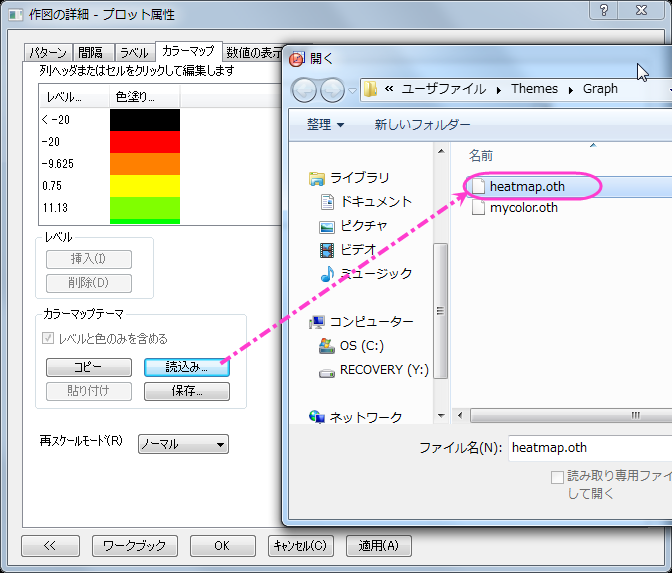

仮想行列を使用してヒートマップとカラーマップ横棒グラフを作成する
Heat-Map-Virtual
概要
このチュートリアルでは、2種類のグラフ、仮想行列を元にしたヒートマップとカラーマップつきの横棒グラフで、これらを統合します。
必要なOriginのバージョン: Origin 2015 SR0以降
学習する項目
このチュートリアルでは、以下の項目について解説します。
- 仮想行列を元にヒートマップを作成します
- カラーマップ横棒グラフを作成します
- ヒートマップと横棒グラフを統合します
ステップ
仮想行列からヒートマップを作成する
このチュートリアルは、チュートリアルデータプロジェクト（<Origin EXE フォルダ>\Samples\TutorialData.opj）と関連しています。
- Tutorial Data.opjを開き、Heatmap and Virtual Matrix Manager
フォルダを開きます。1番目のシートがアクティブな状態でワークブックElectricity Usage が開きます。
- ワークシートのXYZマッピングは以下の図の通りになっています。この図は、ヒートマップ図がどのように作成されちるのか、確認する際に使用します。
- 列Bの1行目のセルを選択した後、CTRL+SHIFT+ENDを押して、Z範囲の全セルを選択します。メインメニューの作図
> 等高線図: ヒートマップを選択して、ダイアログを開きます。
- XとYの範囲を以下の図のように設定します。
- ダイアログで、XのフォーマットとYのフォーマットにチェックを付け、それぞれのボタンをクリックして、下図のようにXとYのデータフォーマットを設定し、OKをクリックしてダイアログを閉じます。
- Y 軸の目盛ラベルは込み入っているため、見ることが出来ません。ですので、以下のように設定を変更します。グラフの軸をダブルクリックして、軸ダイアログボックスを開きます。
- 目盛ラベルを開き、左アイコンをクリックします。表示タブ内のタイプでデータセットからの日付を選択し、表示ドロップダウンリストからDec(現在の月)を設定し、適用をクリックして設定を反映します。
-
- 表タブを開き、有効にするチェックボックスにチェックをつけ、適用をクリックします。適用すると、月の名前がY軸の目盛ラベルとして表形式で表示されます。
-
- 次に、X 軸についてのスケールと目盛ラベルを設定します。
- 目盛ラベルタブのまま、下アイコンをクリックします。表示タブ内のタイプに時間が設定されていることを確認し、表示では
hh pmを選択して適用をクリックします。
-
- スケールタブの水平アイコンを開きます。以下のように設定が行われていることを確認し、適用をクリックして設定を保存します。OKをクリックして、ダイアログを閉じます。X
軸のタイトルを削除します。
-
- 目盛りラベルのXとY軸の目盛をそれぞれクリックし、書式ツールバーを利用してフォントサイズを10にします。
- メインメニューのフォーマット：プロットを選択します。
- カラーマップのレベルを、以下の図のように設定します。
- OK をクリックして、レベルの設定ダイアログを閉じます。
- カラーマップのセル(一番上の白い部分)をクリックして塗り方を次の図のように設定します。
- このセルを最後までスクロールし、一番最後のセルを同じように赤に設定します。
- カラーマップ/等高線タブのカラーマップテーマで設定した情報をheatmap.oth として保存します。これは、このグラフの2つ目の操作で使用します。
- 作図の詳細ダイアログで、左側パネルで一番上のノードをクリックします(デフォルトではGraph1となっているはずです)。印刷・ページサイズタブでサイズを11×11インチに設定して適用をクリックします。左側パネルに戻り、Layer1のサブツリーをクリックしてレイヤの大きさ・描画スピードタブを開きます。設定を以下の図のように編集し、OKをクリックしてダイアログを閉じます。
- グラフの操作ツールバーの
 ボタンをクリックして、スピードモードを解除します。完成したヒートマップは、以下の通りです。
ボタンをクリックして、スピードモードを解除します。完成したヒートマップは、以下の通りです。

 |
仮想行列が作成されると、その情報は内部に保存します。内容は仮想行列マネージャで確認できます。保存された仮想行列は等高線/ヒートマップ/3D曲面図の作図に直接使用することが出来ます。また、以下に示すように、仮想行列を使用して作図のダイアログで直接読み込むことが出来ます。
|
カラーマップ横棒グラフを作成する
- Electricity UsageワークブックのTempシートを開きます。ワークシートを選択し、作図：棒グラフとメインメニューで操作します。
- では、軸のスタイルを設定していきます。
- 軸をダブルクリックして軸ダイアログを開きます。スケールタブを開き、X軸の設定を以下の図のように変更します。
- スケールタブのまま、左側パネルで水平を選択し、開始-55、終了55、主目盛りの値は25、そして副目盛りには1を設定して適用をクリックします。
- 軸と軸目盛タブでX軸（下）の軸と軸目盛りを非表示にするため、軸と軸目盛の表示のチェックを外します。さらに、グリッド線を非表示にするには、グリッド線で同じように操作してください。
- OKをクリックして、ダイアログを閉じます。
- Y 軸のタイトルオブジェクトをダブルクリックしてインプレース編集モードにして「CDD/HDD」と入力してタイトルを編集します。目盛ラベルとX軸のタイトルを削除するために、選択してDeleteキーを押します。
- では、グラフ用のカラーマップを作成します。カラーマップのテーマは先ほど作成したヒートマップと同一になります。メインメニューからフォーマット：プロットを選択し、作図の詳細ダイアログボックスを開きます。
- パターンタブの縁と塗りつぶし、どちらでも色をMap:Col(B)に設定します。
- カラーマップタブを開き、カラーマップのテーマとしてheatmap.othをロードします。
- 
- カラーマップのレベルヘッダをクリックして、レベルを次のように設定します。
- レベルの設定ダイアログはOKをクリックして閉じ、作図の詳細ダイアログでは適用をクリックします。
- 左側パネルで最初のツリーノード(デフォルトではGraph2)で印刷・ページサイズタブを開き、サイズを11×11インチに設定して適用をクリックします。次にLayer1のノードを開き、レイヤの大きさ・描画スピードタブを開きレイヤ領域を以下の図のように設定してOKをクリックし、ダイアログを閉じます。
- 完成した横棒グラフは次の画像のようになります。
ヒートマップを横棒グラフと統合し、更に編集を加える
- ヒートマップのグラフがアクティブな状態でメインメニューでグラフ操作：グラフウィンドウの統合と操作してGraph1
と Graph2 を統合します。レイアウトの再配置のチェックを外し、OKをクリックして設定を適用します。
統合したグラフ(Graph3)のサイズを変更します。フォーマット：作図の詳細(ページ属性)を選択して、印刷・ページサイズタブを開きます。サイズを11×11インチに再び設定し、OKをクリックします。Ctrl+Wをクリックしてグラフの表示を調整します。
- 色スケールオブジェクトのスタイルを指定します。
- 色スケールをダブルクリックし、色スケールダイアログを開き、次の図が示すようにレベルページを設定します。
- OKをクリックして設定を適用し、色スケールの外側の線をドラッグし、見やすい場所と大きさにします。
- 不必要な軸タイトルや凡例は、選択して削除し、テキストツールを使用してテキストオブジェクトを追加し、グラフの情報を記入します。
完成したグラフは次の画像のようになります。